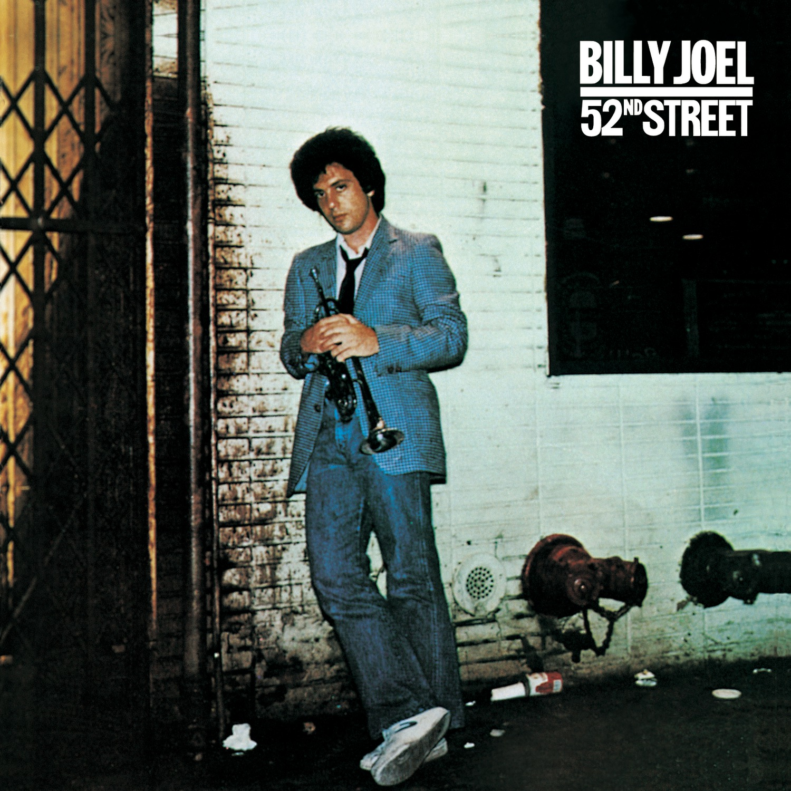
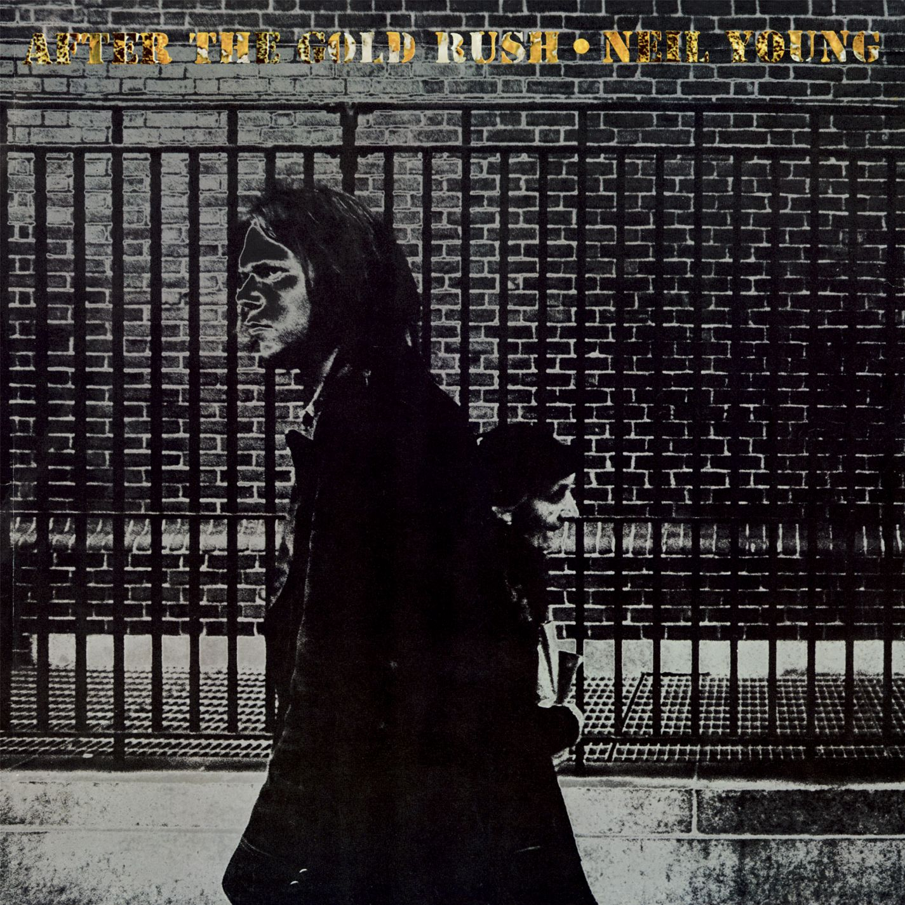

NYC Album Cover Locations
Explore the locations where iconic album covers were shot in New York City and discover their stories.
Billy Joel - 52nd Street
The cover for Billy Joel's 52nd Street was shot on the corner of 52nd Street and 6th Avenue in New York City. This location is significant because 52nd Street was once known as "Swing Street," famous for its jazz clubs and musicians.
After the Gold Rush
Released in 1970, Neil Young’s After the Gold Rush is a timeless exploration of reflection, disillusionment, and environmental concern. The album cover, shot by an 18-year-old Joel Bernstein, captures Young walking past an older woman outside New York University’s School of Law on Sullivan Street in Greenwich Village. The image, accidentally blurred and grainy due to cropping and enlargement, perfectly mirrors the album’s themes of a world fading after its golden age. The woman on the cover was not planned — she happened to walk by, adding an unintentional but poignant touch to the photo. This spontaneous moment, much like the album itself, reflects the raw, fleeting beauty of an era in transition.
More details on the official album page.
Billy Joel - 52nd Street
The cover for Billy Joel's 52nd Street was shot on the corner of 52nd Street and 6th Avenue in New York City. This location is significant because 52nd Street was once known as "Swing Street," famous for its jazz clubs and musicians.

More details on the official album page.